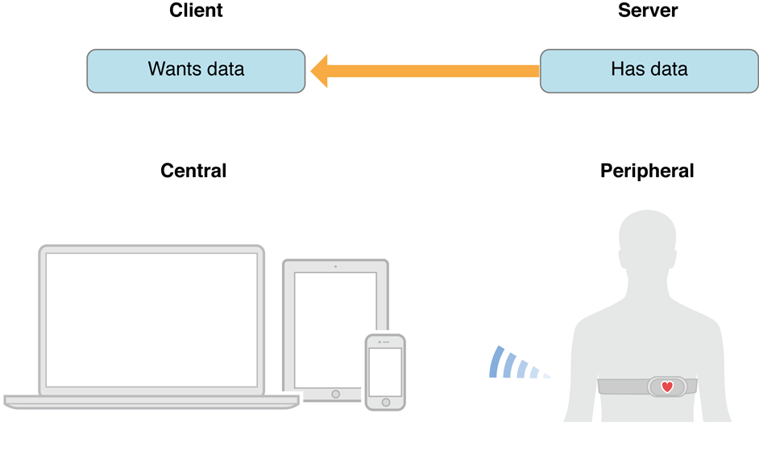

MacOS上 Bluetooth Low Energy/BLE 应用的Swift语言开发笔记

1. 背景
最近由于各种原因打算做一个小gadget，这个小玩具需要用到BLE和PC/MAC通讯。作为一枚程序开发完完全全的新手，中途自然碰壁无数。而且说真的，本来在电脑上面用BLE就是比较罕见的奇葩要求，又找不到随手可用的教（copy）例（paste），总结一些经验教训（code），以供后来人参考。
2. BLE和各种蓝牙区别
首先要注意一下，BLE和以前普通标准的蓝牙不同！两者不通用！
现在常见的蓝牙技术大概有三种，加上新推出的5代：
- Bluetooth Basic Rate_Enhanced Data Rate 也就是 BR_EDR
- Bluetooth Low Energy 也就是 BLE
- Bluetooth Smart 和 Smart Ready 大致是一种企图融合上面两种制式的过渡技术
- Bluetooth 5.0 是最新的规格。买了chip有空再弄。
3. BLE蓝牙协议和实际利用
3.1 具体协议内容和连接方式
详情可以自行百度，或者看原文
协议和栈方面比较详细的介绍有：
蓝牙协议分析(1)_基本概念
蓝牙协议分析(2)_协议架构
蓝牙协议分析(3)_蓝牙低功耗(BLE)协议栈介绍
还有这个：BLE低功耗蓝牙介绍 - CSDN博客
当然了解具体协议和内容是非常非常重要的，不过对于日常小型应用来说，我们知道怎么发送怎么接受信息就可以了。
重点就是理解下图的Services和Characteristics
举个例子，BLE栈就像一个超市，里面有各个部署区域（Services），比方说：
- 蔬果区（HIDS/HID Service 人机交互服务）
- 熟食区（GLS/Glucose Service 血糖服务）
- 零食区（HRM/Heart Rate Monitor 心率监控服务 UUID=0x180D）
而每个部署区域都有货架，比如零食区（HRM心率）里面就有的：
- 巧克力架(Heart Rate Measurement, Value, UUID=0x2A37 心跳率)
- 饼干架(Heart Rate Sensor Location, Value, UUID=0x2A38 传感器位置)
例如，你想买牛奶巧克力，那就先要跑去零食区（UUID=0x180D），然后找到巧克力货架（UUID=0x2A37），et Voila!
这个Services和Characteristics都是用UUID来标记，都是约定俗成的，只能跑去看GATT里面的定义。
也可以自行生成UUID：Online UUID Generator
-（当然有人会问那你想搞个没有定义或者不符合定义的数据的通讯怎么办呢？有个做法是挂羊头卖狗肉，当然Central和Peripheral两头设定都要对得上。）-
3.2 Central和Peripheral
一般来说Central是读取信息的一方，Peripheral是提供信息的一方现在的情况的话电脑是Central了。

3.3 比较有用的测试道具
Mac上面有两个道具比较有用：LightBlue和PacketLogger
iOS上面有：LightBlue，nRF Connect，nRF Toolbox
4. MacOS BLE App Swift编程的注意点
其实iOS的BLE程序的代码差不多改改UI组件就可以在MacOS上面使用，但是在Xcode里面编程调试MacOS Swift代码需要注意几个不同之处
4.1 XPC connection invalid
- 在MacOS的Xcode里面，打开沙盒（App Sandbox）里面的蓝牙
路径：target -> Capabilities -> App Sandbox -> Hardware -> Bluetooth
- info.plist 里面追加 Privacy - Bluetooth Peripheral Usage Description，Value随意
好了，准备完成！现在可以开始写代码了。
使用的swift版本是4, MacOS是High Sierra 10.13.3
5.1 初始化
- 导入库
import CoreBluetooth
- 导入delegate
class ViewController: NSViewController, CBCentralManagerDelegate,
CBPeripheralDelegate {
}
- 实例化
var MacCentralManager: CBCentralManager!
var TargetPeripheral: CBPeripheral!
var TargetCharacteristic: CBCharacteristic!
- 初始化启动
MacCentralManager = CBCentralManager(delegate: self, queue: nil)
- 定义UUID之类
let heartRateServiceCBUUID = CBUUID(string: "0x180D")
let UUID1 = CBUUID(string: "2A37") //这个UUID是心率数据的特征
let UUID2 = CBUUID(string: "2A38") //这个UUID是心率传感器位置的特征
5.2 检查蓝牙设备状态并开启搜索(必做)
每次启动了APP必须首先检查本机蓝牙设备的状态是否在正常运作，否则以后代码很可能报错[CoreBluetooth] API MISUSE: <CBCentralManager: 0x17426af00> can only accept this command while in the powered on state
func centralManagerDidUpdateState(_ central: CBCentralManager) {
//检查蓝牙设备是否有在更新
if central.state == CBManagerState.poweredOn {
print("did update:\(central.state)")
//蓝牙设备确实有反应了才开始搜索
central.scanForPeripherals(withServices: nil,
options: nil)
print("Start Scanning") //调试用
} else {
//蓝牙设备没有更新的话，报告原因
print("BLE on this Mac is not ready")
switch central.state {
case .unknown:
print("蓝牙的central.state is .unknown")
case .resetting:
print("蓝牙的central.state is .resetting")
case .unsupported:
print("蓝牙的central.state is .unsupported")
case .unauthorized:
print("蓝牙的central.state is .unauthorized")
case .poweredOff:
print("蓝牙的central.state is .poweredOff")
case .poweredOn:
print("蓝牙的central.state is .poweredOn")
}
}
}
5.3 搜索目标BLE设备然后连接设备
func centralManager(_ central: CBCentralManager,
didDiscover peripheral: CBPeripheral,
advertisementData: [String : Any],
rssi RSSI: NSNumber) {
//陈列周围的BLE设备
print("BLE Device identified: \(peripheral)")
//寻找identifier代码含有P_UUID的周边设备
if peripheral.identifier.uuidString.contains("P_UUID"){
TargetPeripheral = peripheral
TargetPeripheral.delegate = self //初始化peripheral的delegate
MacCentralManager.stopScan()
MacCentralManager.connect(TargetPeripheral) //连接该peripheral
}
print("\(peripheral) is connected") //调试用输出
}
5.4 确认连接上了
func centralManager(_ central: CBCentralManager, didConnect peripheral:
CBPeripheral) {
print("Connection Confirmed!")
TargetPeripheral.discoverServices([heartRateServiceCBUUID])
print("Target Service Confirmed!")
}
不执行这一步的话下面代码会出错
5.5 搜索指定Services服务并陈列Characteristics特征
var TargetService: CBService! // 实例化一般放在前面
func peripheral(_ peripheral: CBPeripheral, didDiscoverServices error: Error?) {
guard let services = peripheral.services else { return }
for service in services {
print(service)
//陈列所有的service和旗下的characteristics
peripheral.discoverCharacteristics(nil, for: service)
//寻找指定UUID的服务
if service.uuid.uuidString.contains("UUID") {
print("Identified TargetServices \(service.uuid.uuidString)")
TargetService = service as CBService
}
}
}
5.6 找出指定的characteristics特征并读取
func peripheral(_ peripheral: CBPeripheral, didDiscoverCharacteristicsFor service: CBService, error: Error?) {
guard let characteristics = TargetService.characteristics else { return }
print("Existing Characteristics identified") //调试用输出
for characteristic in characteristics {
print(characteristic)
//陈列所有read方式的特征
if characteristic.properties.contains(.read) {
print("\(characteristic.uuid): properties contains .read")
//找到read方式的characteristics并读取
peripheral.readValue(for: characteristic)
}
//陈列所有notify方式的特征
if characteristic.properties.contains(.notify) {
print("\(characteristic.uuid): properties contains .notify")
//找到notify方式的characteristics并读取
peripheral.setNotifyValue(true, for: characteristic)
}
//也可以找指定UUID的characteristic特征
if characteristic.properties.contains("UUID") {
print("\(characteristic.uuid): properties contains UUID")
//找到指定UUID的特征然后下面采取read或者notify
peripheral.setNotifyValue(true, for: characteristic)
peripheral.readValue(for: characteristic)
}
}
}
5.7 监控Characteristics新数据并提取
func peripheral(_ peripheral: CBPeripheral, didUpdateValueFor characteristic:
CBCharacteristic, error: Error?) {
switch characteristic.uuid {
case UUID1:
guard let characteristicData1 = characteristic.value
//这里的characteristicData1就是读取成功的数据啦！
//自由添加代码自己爱怎么操作就怎么操作
case UUID2:
guard let characteristicData2 = characteristic.value
//这里的characteristicData2就是读取成功的数据啦！
//自由添加代码自己爱怎么操作就怎么操作
default:
print("Unhandled Characteristic UUID: \(characteristic.uuid)")
}
}
5.8 写数据
TargetPeripheral.writeValue(dataToTrans, for: WriteCharactistic, type:
CBCharacteristicWriteType.withResponse)
type还有withoutResponse
6. 总结
以上介绍了MacOS连接BLE设备最简单的基本操作流程，利用以上代码基本可以进行初级的读写数据。
如有错误还请指出。
MacOS的代码例子有空再写~
iOS上面的比较好的GitHub例子：https://github.com/DennisMao/eswiftBLE a.k.a 【Mac/ios】Swift3.0 BLE开发 - RazilFelix的博客 - CSDN博客
其他诸多参考
[1]iOS×BLE Core Bluetoothプログラミング
[2]iOS SwiftでBLEのサンプルを動かしてみる
[3]macOS x mbed OS でBLE通信する方法
[4]Core Bluetooth Tutorial for iOS: Heart Rate Monitor
[5]swift使ってEddystone-URLを受信するiOSアプリを作った - BlankTar
[6]iOS蓝牙之Introduction to Core Bluetooth: Building a Heart Rate Monitor（翻译） - CSDN博客
[7]BLEのペリフェラルを今更実装してみた(iOS編)
[8]Getting started with Bluetooth Low Energy on iOS
[9]Core Bluetooth Programming Guide Apple
վ HᴗP ի
This blog is under a CC BY-NC-SA 3.0 Unported License
Link to this article: https://hanspond.github.io/2018/02/16/MacOS上BLE应用的Swift语言开发笔记/